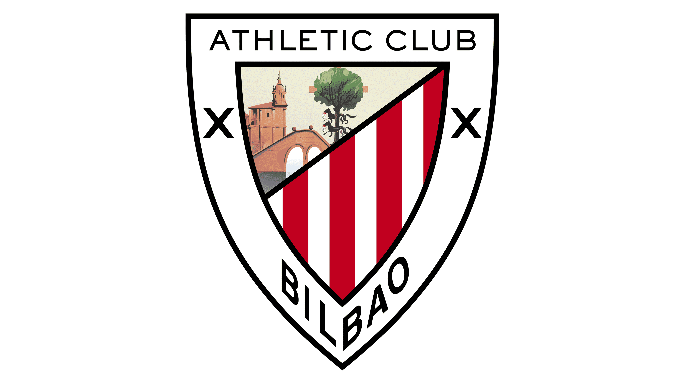
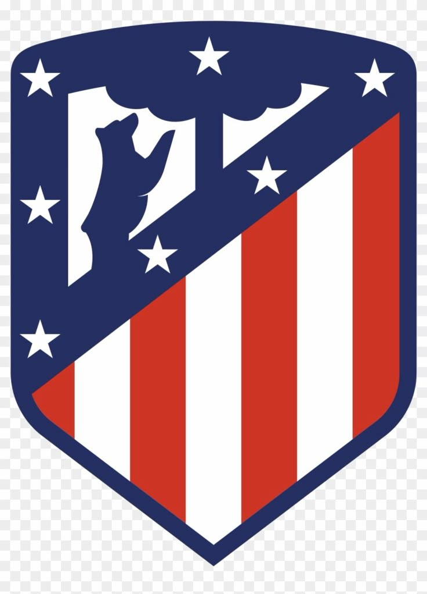
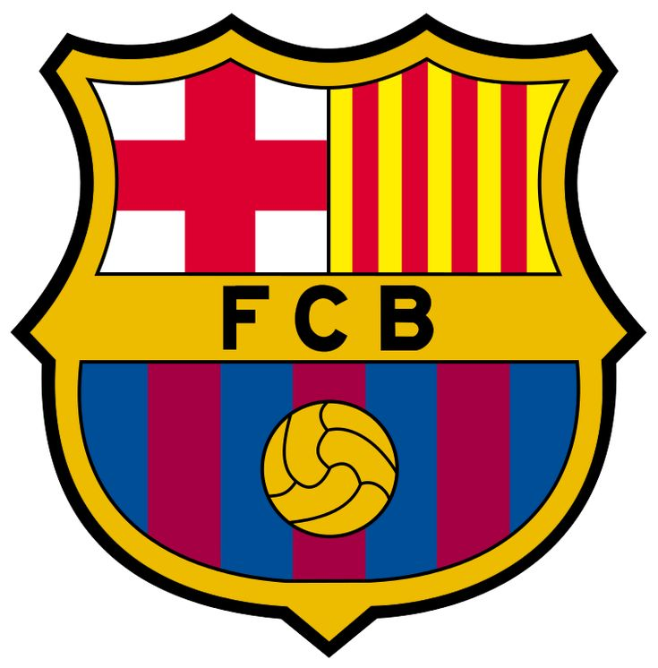


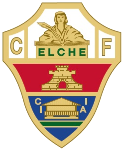


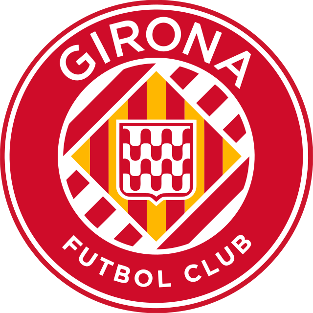
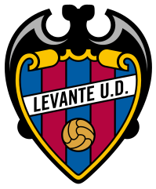
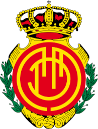
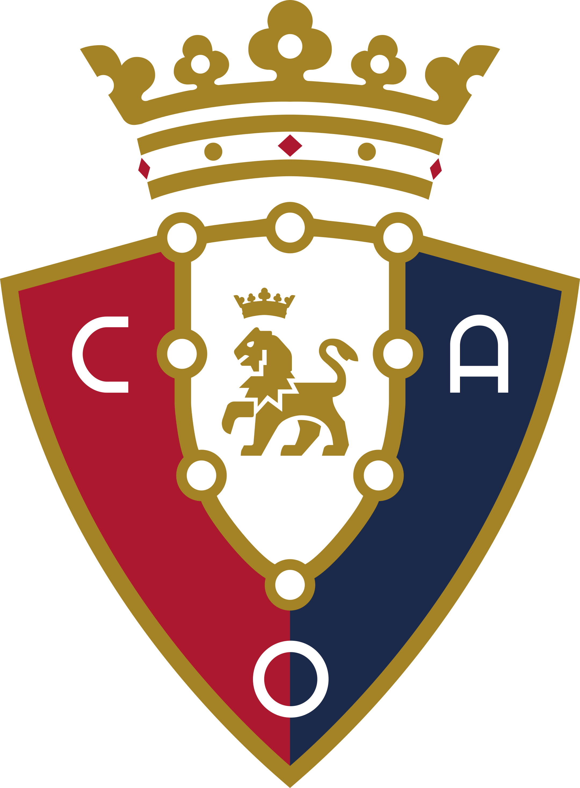
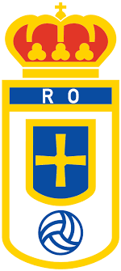
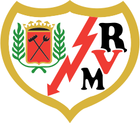

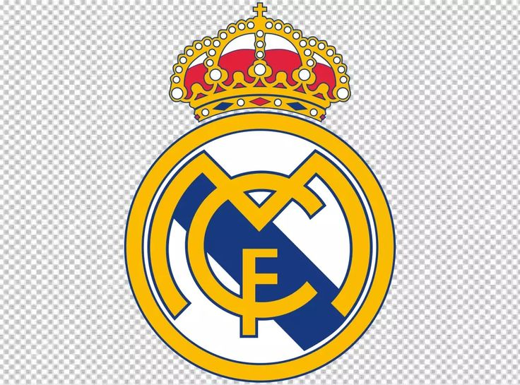
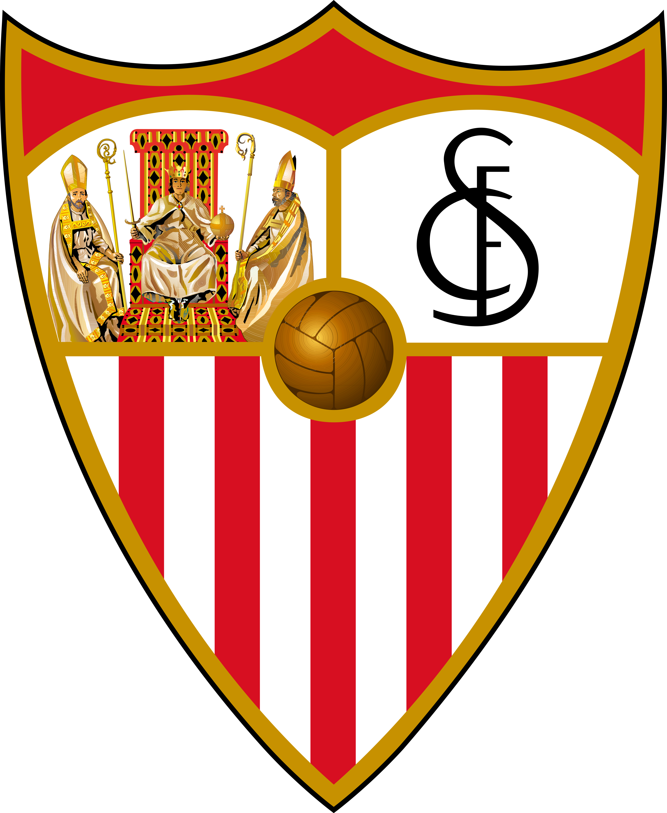
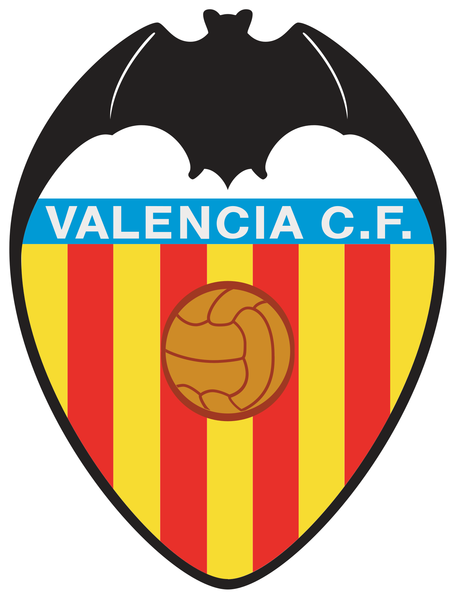
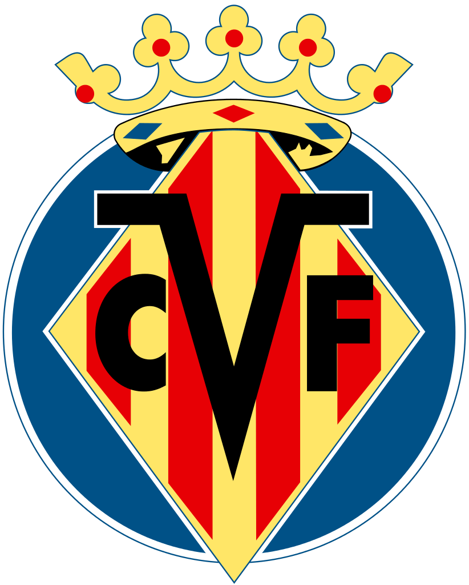
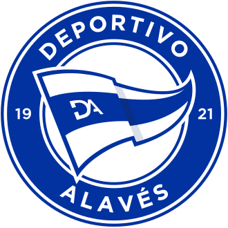
El Deportivo Alavés, fundado en 1921 en Vitoria-Gasteiz, es un club con una historia de resistencia y "milagros" deportivos que ha vivido diversas etapas en la élite del fútbol español. Su época dorada comenzó a finales de los 90, logrando un histórico sexto puesto en su regreso a Primera y alcanzando la mítica final de la Copa de la UEFA en 2001, donde cayó con honor ante el Liverpool (5-4) en uno de los mejores partidos de la historia europea. Tras años de dificultades financieras que lo llevaron hasta la Segunda B, el "Glorioso" resurgió en 2016 para establecerse nuevamente en la máxima categoría, llegando incluso a una final de Copa del Rey en 2017; desde entonces, el club se ha consolidado como un equipo aguerrido y rocoso que, a pesar de algún descenso puntual, siempre encuentra el camino de vuelta a Primera apoyado en una de las aficiones más fieles y ruidosas de España en su estadio de Mendizorroza.
Campeón de Segunda División (4 títulos) 1929-30, 1953-54, 1997-98 y 2015-16.